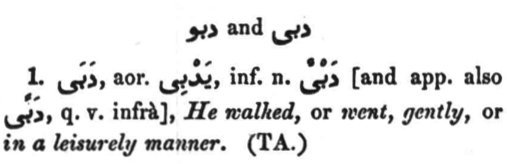
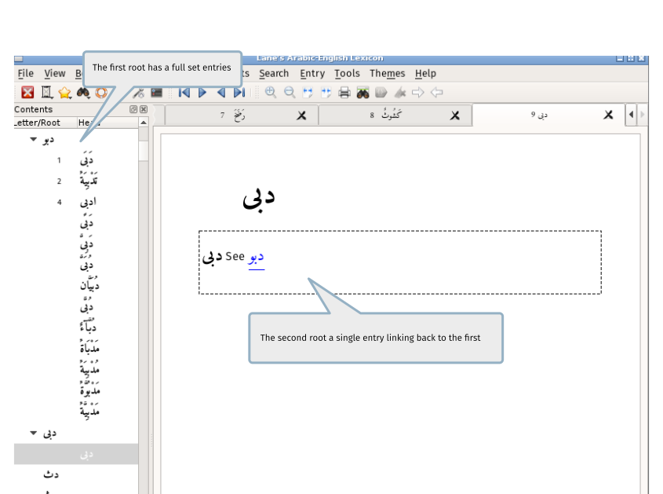
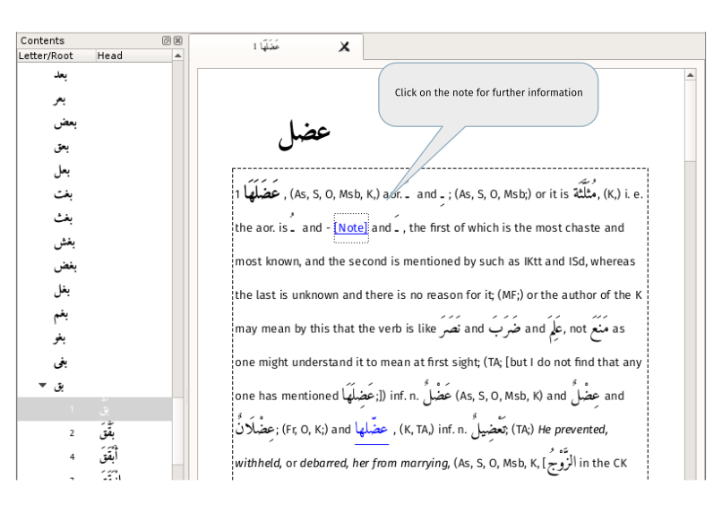

Some things that are different
Handling of root entries
Lane has a number of entries which take the forms: xxx yyy zzz or xxx and yyy or xxx or yyy, such as the following from Volume 3, page 850:

For each of these forms a full entry has been written for the first word in the list but every other entry has a link back to the first. Using the above example:

Supplement merge
TODO screenshot Supplement colour
.supplement { background-color : lightgray }
Head entries - multi-word heads
Many entries, such as the one below, contain not a single head word but a head phrase. The software attempts to identify a single headword for each entry and, by default, shows this in the contents panel. The Head search dialog also targets this single headword by default. This behaviour can changed by setting the relevant option here or here.

Notes from the editor
